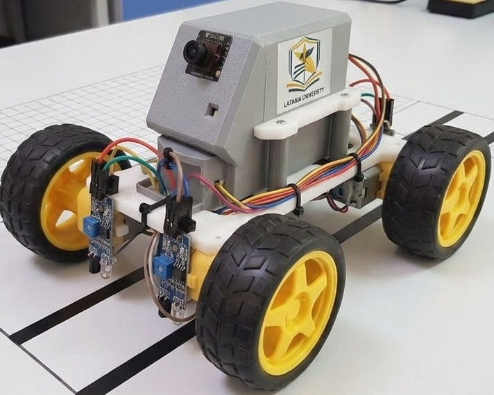

ROBOTICS / COMPUTER VISIONAttendance Tracking Robot
An autonomous 4-wheeled robot that follows a line route between offices, stops at each one to scan faces with an ESP32-CAM + OpenFace pipeline, and logs attendance with timestamps.
Built on an Arduino Uno with an L298D motor shield, TCRT5000 line sensors and an HC-SR04 obstacle sensor. Faces are detected with SSD and converted to 128-D embeddings via OpenFace, then matched by cosine similarity against a JSON employee database. Navigation uses fuzzy logic and magnetic stop markers, and a Tkinter GUI lets admins manage profiles and review the attendance log. Tested to 92% recognition accuracy under normal office lighting.